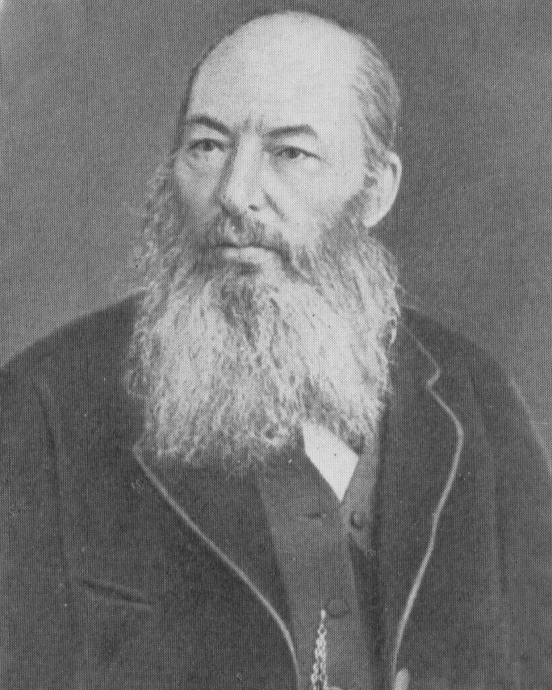
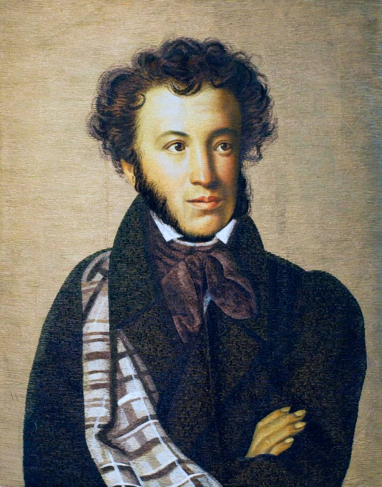

Лучшие стихи классиков и современных поэтов
Это литературный портал, на котором авторы стихов и читатели находят друг друга. Любители поэзии смогут познакомиться здесь со стихами классиков и современников. Авторы же стихов смогут поделиться своими произведениями со всеми посетителями портала, получить оценки и отзывы о своих стихах, а также общаться со своими читателями и собратьями по перу.
Афанасий Афанасьевич Фет - Переводчик, мемуарист, поэт-лирик – Афанасий Фет всю жизнь воспевал красоту в любых ее проявлениях. Социальная тематика не привлекала автора, он не стремился отразить в своих произведениях какие-то философские аспекты. Все стихи Фета – гимн природе и признание в любви, светлой, лишенной плотских черт. Творец сознательно уходил от анализа и конкретики, апеллируя не к разуму читателей, а к их эмоциям. Будущие символисты не случайно считали Фета своим вдохновителем, его стихи напоминают музыкальные миниатюры – прозрачные, звенящие, рождающие нежные чувства.
Александр Сергеевич Пушкин – символ русской поэзии, это величайший поэт не только России, но и мира. Стихи Пушкина и произведения в прозе включены в школьную программу, по ним ставят спектакли и снимают фильмы. Без Пушкина не было бы русской литературы – такой великой, как она есть. Диапазон тем, раскрытых в творчестве великого поэта, поражает: сказки, наполненные яркими образами, стихи для детей, острые эпиграммы, необыкновенно лиричные стихи о любви, стихи о верной дружбе, о любви к родине, к матери. Стихи Пушкина читаются легко, а строки проникают прямо в душу и делают ее лучше и богаче.
Сергей Есенин - Выдающийся русский поэт XX века. Знаток народного языка и народной души. В своих стихах Сергей Есенин предстает тонким лириком, мастером пейзажа и человеком, глубоко понимающим и любящим свою страну - Русь. Его поэзия пропитана самобытным, неповторимым стилем и авторским слогом. Сергей Есенин - уникальная фигура XX века. Его стихи читают и любят уже на протяжении двух столетий.
Тютчев Федор Иванович. Русский поэт и мыслитель. Тютчев один из самых выдающихся представителей философской и политической лирики. Он состоял на госслужбе и при этом писал свои произведения. Стихотворения Тютчева посвящены разным темам, но основными были: любовь и природа. В своих стихах автор мастерски показывает всю многоликость и красоту этого мира, заставляет сопереживать и соучаствовать в чувственных порывах героев своих стихотворений.